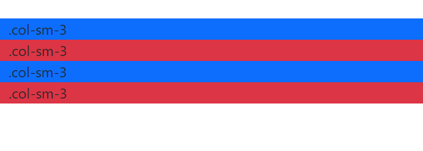
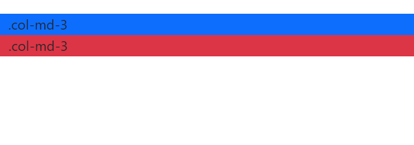

BOOTSTRAP GRID SYSTEM
DOWNLOADING THE LIBRARY AND ADDING THE HTML CODE
We need to download some libraries.
Follow the steps below.
Click here Then click the download button on the page that opens.

Download js and css files. Add the downloaded files into the HTML codes.

< !DOCTYPE html> < head> < meta chaarset="utf-8"> < tittle> BOOTSTRAP GRID SYSTEM < link rel="stylesheet" href="bootstrap.min.css"> < link rel="stylesheet" href="bootstrap.min.js"> < link rel="stylesheet" href="bootstrap-grid.min.css"> < /head> < /html>
WHAT IS BOOTSTRAP?
If we want to make a professional website, our site should work in harmony with all devices (desktop, laptop, tablet, phone, etc.).
The design structure suitable for all devices is called responsive design .
Responsive is the bootstrap that provides us the greatest convenience when designing web.
Now, with the introduction of various mobile devices into our lives, it has become a must for websites to be compatible with all screen sizes.
WHAT IS RESPONSIVE?
Changes the view that appears on the computer according to the screen size of your device.
12 GRID STRUCTURE OF BOOTSTRAP
Bootstrap treats web pages as horizontally divided into 12 equal parts. Each grid is prepared with a width value of 8.3%. The frontend developer can also edit the entire structure faster and easier than ever by simply defining the class.
BOOTSTRAP GRID SYSTEM
Grid structure gives you speed in creating the skeleton structure of your site. But this is not the biggest innovation. Thanks to the grid structure, you can make your web page responsive. How Does? Take your time, there are a few more features we need to learn first. Bootstrap's grid structure allows you to create designs suitable for all kinds of portable devices. It lists them as extra small(xs), small medium(sm), medium(md) and large(lg) devices. I will explain these features in detail in the future. We start with the most basic.
The above definition of col-md-6 takes a position to occupy 6 out of 12 (half) of the screen on medium sized devices. There were 12 grids, here we have indicated 6 of them. Therefore, when we give this class to a div, the element will automatically take the width value of 50% (6/12 grid). Note: Medium-sized devices have screen widths greater than 992 pixels. After giving you a brief explanation about some concepts, I will move on to features and examples.
WHAT ARE THE OFFSET AND PUSH CONCEPTS?
Her Both definitions allow you to push the relevant element from its outer part. Think of it like a margin. Just as a picture whose margin value is 50 pixels moves away from other elements by 50 pixels, offset and push definitions do this job.
CONTAINER CLASS IN BOOTSTRAP
A class has been created in Bootstrap that creates the main div structure with the content parts. This is the container class and using this class the parent div is resized more successfully. Container class is of 2 types. 1. container only; takes the center of the page is 1170px wide. 2. container -fluid takes the whole page as width. Grid system classes are also used in these container classes, and designs are created without any problems.
As shown above, in order to make a responsive design, it is necessary to write a code suitable for each device size.
In this way, we can achieve a stable working design on all devices. Grids are created by dividing the content area given in Bootstrap into rows and then columns.
We open a row by giving the row class to the div tag and now we can create our columns within this row.
Each row is divided into 12 parts. The classes available to us here can be used with each column size, as well as in the form of 2,3,4,5…12 parts.
Responsive with .container, that is, according to browser width, .container class determines the fixed width that our page will take.
This is the HTML part.
This is the CSS part.
< !DOCTYPE html>
< div class="container">
< /div>
< /html>
.container{
height:100px;
background-color:blue;
}
This is the HTML part.
< !DOCTYPE html>
< div class="container-fluid">
< /div>
< /html>
This is the CSS part.
.container-fluid{
height:100px;
background-color:blue;
}
BOOTSTRAP-4 GRID SYSTEM FEATURES
Bootstrap uses the following media query values.
//On Small Devices (576px and above)
@media (min-width: 576px) { ... }
//For Medium Devices (tablet, 768px and above)
@media (min-width: 768px) { ... }
//On Large Devices (Desktops, 992px and above)
@media (min-width: 992px) { ... }
//On Extra Large Devices (Large Desktops, 1200px and above)
@media (min-width: 1200px) { ... }
So browser width;
--Is it -576px and below (.xs)
-- is in the minimum range of 576px and 768px (.sm)
--is in the minimum range of 768px and 992px (md)
--minimum is in the range of 992px and 1200px (lg)
--or 1200px and above (xl)
The xs class is obsolete in bootstrap 4.
Instead of dealing with numeric values using a media query, it is much easier to use the class names determined by bootstrap 4 and corresponding to each numeric value. These class names are .xs (extra small), .sm (small), .md (medium), .lg (large), and .xl (extra large).
VİSİBLE AND HİDDEN
While using Bootstrap, we do not deal with display definitions.
We can manage the visibility of your elements in all kinds of designs with only one class.
I have divided the definitions I will give below as visible and hidden.
A visible definition given in its normal state makes the item visible on all kinds of devices. Hidden hides it.
Let's learn in detail now.
visible-lg:Only visible on large screen widths.
visible-md: Only visible on medium screen widths.
visible-sm: Only visible on small medium screen widths.
visible-xs: Only visible on extra small screen widths.
hidden-lg: It is hidden only on large screen widths.
hidden-md: It is hidden only on medium screen widths.
hidden-sm: It is hidden only on small screen widths.
hidden-xs: It is hidden only on extra small screen widths.
Of course, you can use these structures in multiple ways. For example;
< div class="visible-lg hidden-md visible-sm hidden-xs">< /div>
We have stated above so that the screen width will appear in large and small medium, but not in medium and extra small.
BOOTSTRAP-4 GRID SYSTEM EXAMPLES
Now I'm going to explain our first example to you, and then we'll see how it looks.
We will create 4 different columns side by side. They appear side by side when the browser size is at its largest.
If we reduce the browser size to the smallest size, we get a new view with the 4 columns that we created.
Now, after I show you the HTML and CSS codes, I will place the photo at the bottom showing how it looks.
< div class="container">
< div class="row">
< div class="col-sm-3 bg-primary">.col-sm-3< /div>
< div class="col-sm-3 bg-danger">.col-sm-3< /div>
< div class="col-sm-3 bg-primary">.col-sm-3< /div>
< div class="col-sm-3 bg-danger">.col-sm-3< /div>
< /div>
< /div>
This is the CSS part.
.row{
height:50px;
}
This is how it looks when the browser size is full screen.

This view is the image we get when the browser size is the smallest.
In the example I gave above, the dimensions of the 4 columns were equal to each other.
In the example I will give now, there will be 2 columns.
But our second column will be bigger than our first column.
This part is the CSS part.
This is the HTML part.
< div class="container">
< div class="row">
< div class="col-md-3 bg-primary">.col-md-3< /div>
< div class="col-md-9 bg-danger">.col-md-3< /div>
< /div>
< /div>
.container-fluid{
height:100px;
background-color:blue;
}
As I said when the browser size is in full screen, the second column is larger than the first column.
Let's see what happens when we make the browser size the smallest size.

Column sizes place their sizes equally under each other when we make the browser size the smallest.